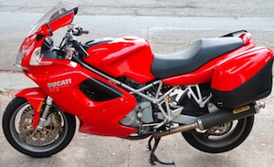

Services
DJ Cycles is a full service shop. Some of the standard offerings are:
- Pre or Post Purchase Inspection
- Tune Up
- Oil Change
- Brakes
- Chain Adjustment
- Suspension Adjustment, Upgrade, and Service
- Engine and Transmission Rebuilds
- Electrical Repairs
- Accessory Installation
- Carburetor Adjustment or Rebuild
- Fuel Injection Service
- Tire Installation
- Performance Modification
- Crash Repairs
- Restoration Services